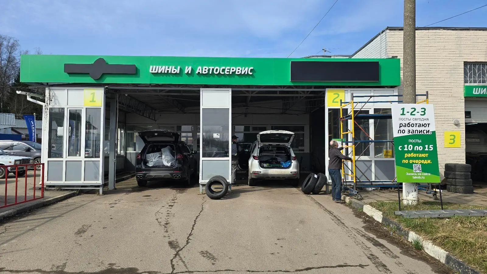
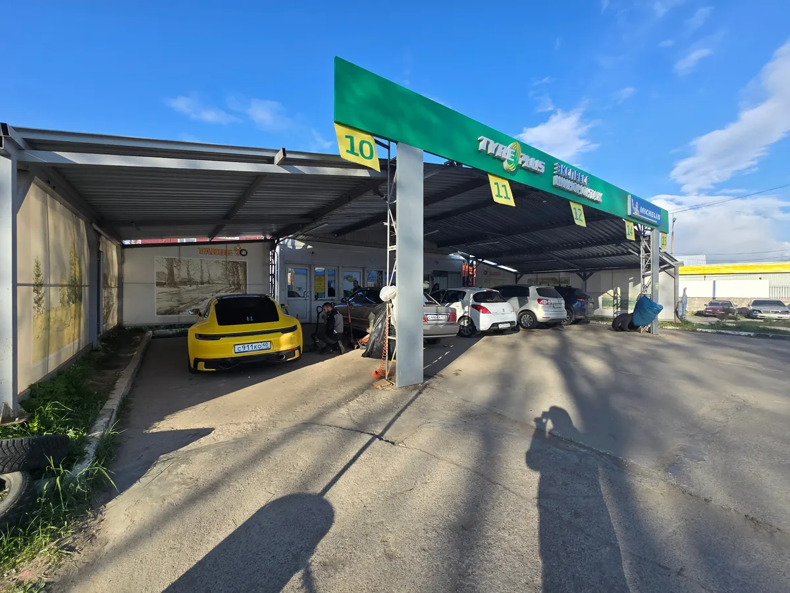
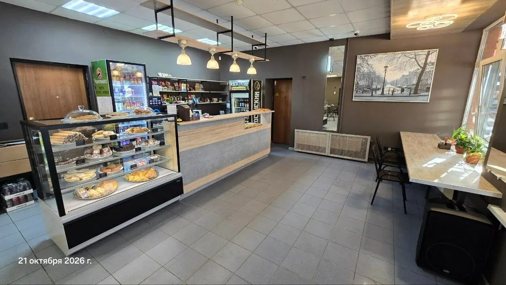
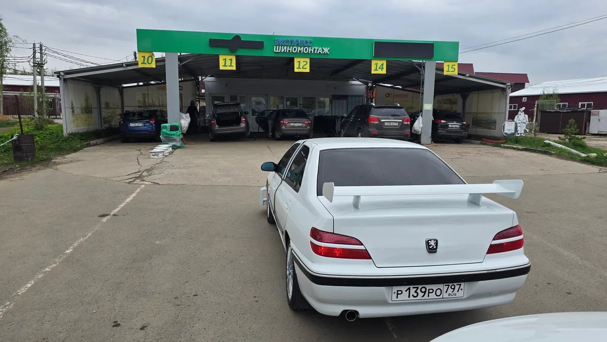

Шиномонтаж · Обнинск
Шиномонтаж в Обнинске по записи – заезжаете в бокс без очереди
5–7 машин обслуживают одновременно. Ждёте с бесплатным кофе в кафе с аквариумом.
- 5,0 на Яндекс.Картах · 218 отзывов
- Кафе с бесплатным кофе для клиентов
- Хранение шин от 2 700 ₽ за сезон

Как устроен визит
Входит
- Записались по телефону или на сайте
- Приехали – сразу в бокс, без очереди
- Ждёте в кафе: кофе, ТВ, аквариум
- Переобувка комплекта – около 20–30 минут
Отдельно, если нужно
- Отдельный бокс для купивших резину
- Хранение сезонного комплекта
- Дисконтная карта постоянного клиента
Цена известна до приезда
Хранение – по прайсу с карточки (обновлено 23 октября). Стоимость монтажа называем при записи.
Хранение шин, 6 месяцев (комплект 4 шт.)
- R13–R14без дисков2 700 ₽
- R13–R14в сборе с дисками3 200 ₽
- R15–R16без дисков3 000 ₽
- R15–R16в сборе с дисками3 500 ₽
- R17без дисков3 200 ₽
- R17в сборе с дисками3 700 ₽
- R18+без дисков3 500 ₽
- R18+в сборе с дисками4 000 ₽
- Внедорожникибез дисков3 500 ₽
- Внедорожникив сборе с дисками4 000 ₽
Сервис
- Шиномонтаж, балансировкауточнить
- 3D сход-развализ отзывов: 1 300 ₽, около 30 минутуточнить
- Правка дисковзапуск с 1 декабря 2026уточнить
- Продажа шин и дисковмагазин при сервисе, дисконтная картауточнить
Хранение – по прайсу с карточки, выдаём бумагу о приёме. Стоимость монтажа и развала называем при записи: с дисконтной картой выходит средне по городу.
Как проходит
- 01
Записались на удобное время
По телефону или онлайн, за минуту.
- 02
Приехали – сразу в бокс
5–7 постов, очередей нет.
- 03
Ждёте в кафе с кофе
Бесплатный кофе для клиентов шиномонтажа.
- 04
Через 20–30 минут забираете машину
Со скидкой по дисконтной карте.



Что обещаем
По записи – без очереди
Заезжаете в бокс к своему времени.
Цены адекватные, не зашкал
С дисконтной картой – средние по городу.
Гарантия производителя на брендовые шины
Michelin-франшиза: официальная гарантия.
Бумага о приёме на хранение
Сезонный комплект маркируем и храним.
Отзывы с Яндекс.Карт
«Удобный стиль работы: по записи. Вовремя заезжаешь в бокс, оперативно работают, удобное ожидание в ккафе, по качеству замечаний нет. Я уже несколько сезонов обслуживаю а/м здесь.»
Ирина Годовникова · 31 октября 2022
«Приехал чуть раньше - но не ждал ни минуты - сразу поставили в бокс. На все ушло минут 20... Цены адекватные. Не дёшево, но и не зашкал.»
Борис Ю. · 27 октября 2022
«Быстро, качественно, недорого. Делали сход-развал после замены поворотных кулаков. Пол-часа делов. Без лишних слов, но очень вежливо.»
Артём Филиппов · 21 августа 2024
Отзывы с карточки на Яндекс.Картах, без правок.
Частые вопросы
Сколько длится переобувка?
По отзывам клиентов – около 20–30 минут на комплект, если вы записались.
Сколько стоит шиномонтаж?
Прайс называем при записи: с дисконтной картой выходит средне по городу. Хранение – от 2 700 ₽ за сезон, цены открыты.
Можно ли оставить шины на хранение?
Да, храним комплекты 6 месяцев – от 2 700 ₽, выдаём бумагу о приёме.
Чем заняться, пока жду?
В сервисе кафе: бесплатный кофе для клиентов, ТВ и большой аквариум.
Запишитесь к своему времени
- Адрес
- Обнинск, Кабицынская ул., 16, Обнинске
- Часы
- Ежедневно 09:00–20:00
- Телефон
- +7 (484) 394-00-40